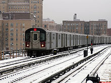
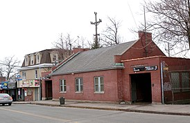
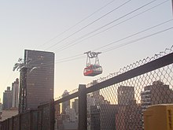
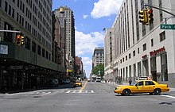

Городской транспорт Нью-Йорка
Содержание
- Метрополитен
- Городской поезд Статен-Айленда
- Канатная дорога
- Автобус
- Миниметро-аэроэкспресс
- Такси
- Паром
К общественному транспорту Нью-Йорка относятся метро (помимо городского метрополитена, существует также обособленная наземная метролиния на Статен-Айленде, а также — подземка, связывающая Манхэттен с прилегающими населёнными пунктами штата Нью-Джерси, — PATH), автобусы, такси, канатная дорога, связывающая Манхэттен с островом Рузвельт, автоматизированное мини-метро, обслуживающее аэропорт им. Кеннеди, а также паромы. Имеется также пригородное железнодорожное сообщение, связывающее Нью-Йорк с Лонг-Айлендом, штатами Нью-Джерси и Коннектикут, а также — близлежащими населёнными пунктами штата Нью-Йорк. Большинство этих систем находится в ведении регионального управления MTA (The Metropolitan Transportation Authority). Нью-джерсийская транспортная корпорация — NJ Transit — распоряжается железнодорожными и автобусными маршрутами обслуживающими Нью-Джерси. Портовое управление Нью-Йорка и Нью-Джерси обслуживает трансгудзонскую подземку PATH (Port Authority Trans Hudson), мини-метро «Airtrain» в аэропорту им. Кеннеди и одноимённый монорельс в аэропорту Ньюарк, а также — нью-йоркский автовокзал.
-
Метрополитен
основная статьяМетрополитен Нью-Йорка включает в себя 472 станций на 25 маршрутах, имеет общую длину в 1370 км и является самым протяжённым в мире по общей длине маршрутов (самое длинное по линиям метро — Пекинское). Метро охватывает 4 из 5 городских районов (Манхэттен, Бруклин, Куинс и Бронкс). Оно традиционно именуется subway (подземка), хотя 40 % путей и треть станций находятся на поверхности и расположены на уровне земли или на эстакадах.

Проездной билет на 7 суток стоит $31, на 30 суток — $116,50[40]. При этом многодневный проездной билет даёт право на неоднократный без ограничений проезд в метрополитене и в автобусах города в течение срока его действия. Отсчёт начала срока действия проездного (то есть фиксация первых суток использования билета) производится с момента первого прохода через турникет метрополитена или автобуса вне зависимости от времени прохода и заканчивается в 24:00 последних суток действия. -
Городской поезд Статен-Айленда
основная статьяНе связанная с метро и пригородными поездами, линия городского поезда на Статен-Айленде имеет поезда, аналогичные метрополитеновским, и действует под управлением той же компании MTA. Рассматриваются проекты по преобразованию действующих и заброшенных железнодорожных линий острова в две линии лёгкого метро.
 -
Канатная дорога
основная статьяВ 1976 году была запущена канатная дорога, соединяющая Манхэттен и остров Рузвельт. Дорога имеет длину 940 м и две станции и управляется компанией MTA.
 -
Автобус
основная статьяНью-Йорк имеет развитую сеть автобусных маршрутов, которая ежедневно перевозит более 2 миллионов пассажиров. Автобусная сеть Нью-Йорка включает более 200 местных (курсирующих исключительно по своему району) и 30 скоростных (межрайонных) маршрутов, на которых работает более 5900 автобусов. Каждый местный маршрут имеет номер и буквенный префикс, обозначающий район, который он обслуживает (B — Бруклин, Bx — Бронкс, M — Манхэттен, Q — Куинс, S — Статен-Айленд), а скоростные маршруты обозначены префиксом X.
Стоимость проезда по состоянию на март 2017 года — $2.75, в автобусах-экспресс — $6.50[41]. При этом у водителя можно попросить «трансфер». Этот документ позволяет в течение двух часов произвести пересадку и без оплаты продолжить движение на другом автобусе (в попутном или пересекающем направлении, но не в обратном), либо на метро. Также для проезда можно воспользоваться билетом, выданным в метрополитене, после использования этого билета для поездки на поезде метро. -
Миниметро-аэроэкспресс
основная статьяСамая новая в городском транспорте, система автоматических поездов (peoplemover, пиплмувер) — аэроэкспрессов (airtrain) действует с 2003 года, связывает аэропорт имени Джона Кеннеди с линиями метро и пригородных поездов, имеет 3 маршрута на линии длиной 13 км и управляется Портовым управлением Нью-Йорка и Нью-Джерси (The Port Authority of NY and NJ), в ведении которого находятся нью-йоркские аэропорты и ряд других транспортных объектов в регионе.
-
Такси
основная статьяТрадиционно жёлтые и многочисленные нью-йоркские такси пользуются очень большой популярностью.
 -
Паром
основная статьяНесмотря на наличие объездных тоннелей и мостов через другие районы, действует бесплатный паром между Манхэттеном и Статен-Айлендом. Этот паром перевозит около 22 миллионов пассажиров в год, что делает его крупнейшей в мире чисто пассажирской паромной линией и наиболее загруженным паромным маршрутом в США[42]. Кроме того, действуют и другие паромные линии, соединяющие Манхэттен с остальными частями города.